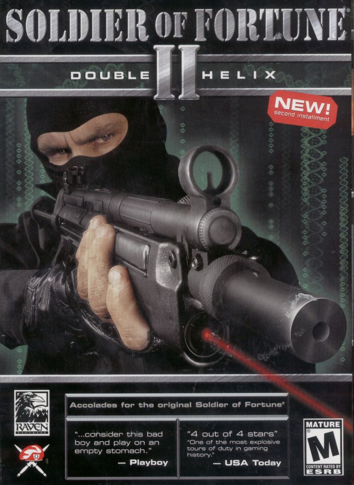
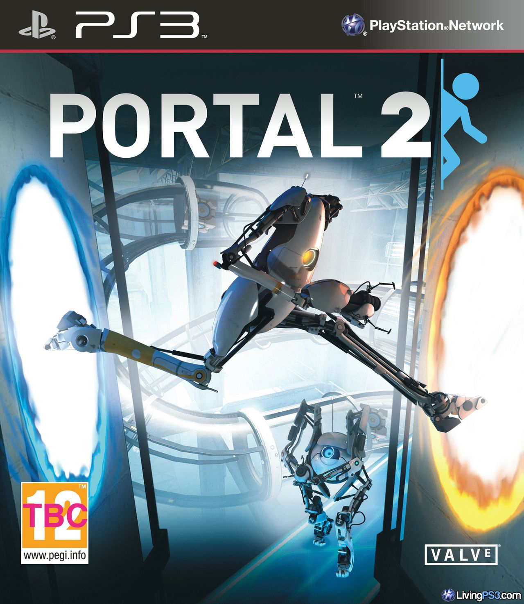

FPS Clasico del año 2001, este juego cuenta la historia de la II Guerra Mundial, desde una perspectiva un tanto turbia, en donde el Eje tiene ventaja contra los aliados, excelente juego, historia y gráficos para su epoca, recomendado al 100%
Solider of Fortune 2: Double Helix

Nota Final del juego: 10 / 10 de puntos totales
Un juego clásico lanzado en el 2002, un juego que para su epoca intentó ser un shooter realista que a día de hoy sigue siendo recordado por jugadores veteranos con cariño
Portal 2

Nota Final del juego: 9 / 10 de puntos totales
Juego clásico de puzzles, usando una pistola de portales a traves del espacio, moviendo bloques, evitando torretas, todo con el fin de poder escapar de las instalaciones de un laboratorio olvidado.